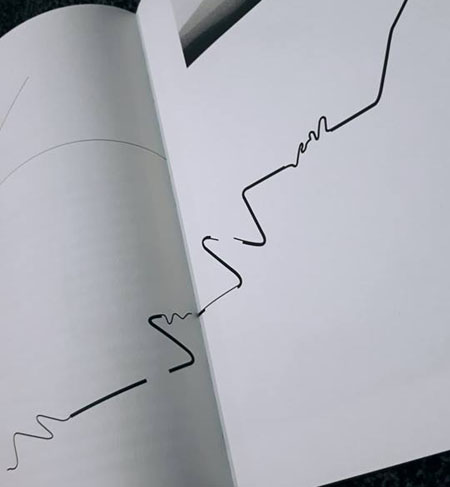

Credited as the ‘Father’ of New Wave typography, Wolfgang Weingart was a graphic designer and an incredibly unique typographer. His experimental processes drew international attention and deservingly so. Within this essay, I will look into Wolfgang’s development, and how his variety of experiences throughout his life had a revolutionary influence on his work that ultimately led to many people considering him as the pioneer of ‘New Wave’ typography.
Wolfgang was born in ‘Konstanz’, Germany. He had a fruitful childhood that was filled with many experiences and travels. He even experienced the end of the second world war and all that came with it, such as the shortages that existed and the terrible memories of conflict. This period in his life was key to his later years. Wolfgang had a unique curiosity about him, he would find creative opportunities where others would not think to look. Dismantling parts from his bike, he would study them, take notes and put it back together. There was something about the process of doing this that ignited creative interest within him.
Wolfgang’s development throughout his school years was somewhat unsuccessful. He did not enjoy it nor did he understand the work. Often, he would revert to methods of cheating to fulfil his academic tasks. His parents looked for outside sources of education as he did not seem to be benefiting from the traditional curriculum. During their weekends or school breaks they would travel as a family to different cities or regions close to their home with the purpose of studying these locations and experiences.
Throughout his childhood his family moved around and travelled a lot, he was quick to absorb all of his surroundings. From the tucked away chalets in the snow-covered mountains observed from their visit to Switzerland to the change in architecture, colour and landscape of their time spent living in Portugal in 1954.
Wolfgang returned to Germany in 1958 to attend the ‘Merz Academy’ for 2 years studying applied art and Design. He learnt a variety of disciplines such as applied courses in typography, graphic design and printing methods. For the first-time Wolfgang discovered the facilities of typesetting and print, this was a breakthrough. Little did he know this was an important moment for his later work, it would influence the way he worked and the processes he used throughout. Here he would spend extended time in the type setting work shop working the type metal, woodblock printing and linocut. In doing so he found a comparison in setting type by hand. The procedure behind it was similar to what he had done before, during his childhood. Composing paragraphs using single letters, paragraphs and even cleaning the letters and returning them in their systematic order. This was the same process he would use for dismantling his bike and then putting it back together it. Initially he did not see the potential and creative freedom that this discovery had offered him. But it was ultimately a major stepping stone in his development towards his thinking process in his later work.
Weingart wanted to learn a trade. In 1960, he went on to begin a typesetting apprenticeship with ‘Ruwe Printing’ in Stuttgart, Germany. Here he undertook rigorous and disciplined teaching to become a traditional typesetter. During this time, typographic work in Switzerland had become prominent internationally. This was known as ‘Swiss Typography’. Swiss Typography was a typographical style that focused on a set of principles, it used gridded systems and arrhythmic calculations to maintain a consistent, clean and legible style of work. This was the first time it had become apparent to him. This was a breakthrough for him, it was his calling. During his time, here he worked with the mind-set of Swiss typography, with its clean orderliness.
It was the company’s consulting designer, Karl-August Hanke who introduced Wolfgang to the movement that was occurring in the Basel School of Art. He was former student of the school. To Wolfgang the ideas originating from Switzerland at the time were ‘revolutionary’ as he described in his book ‘My Way to Typography’, they were at the forefront of Swiss Typography. It was led by iconic names such as Emil Ruder and Armin Hoffer. This was a major eye opener for Wolfgang and a real motive towards his future move to Switzerland. It would influence his work over the coming years. Hanke had become somewhat of a mentor for Wolfgang, teaching him the ways of typography, it ‘allowed me to trust my intuition’ and for the first time he really had confidence and purpose in the work that he was doing. It was Hanke that really pushed Wolfgang to apply to the Basel School.
During his apprenticeship, Wolfgang began to show major progression and intuition in his work. One day while reaching for letters from the top shelf of a wooden type case in the workshop, it came loose and fell to the floor with an almighty crash. This type case was arranged with around 110 individual boxes, each in systematic order. The letters sprawled across the workshop floor. This was a job that would have taken 2-3 days to reorganise. Wolfgang saw an opportunity for exploration. This would be the making of ‘The Letter Circle’. Using the both sides of the letters that had fallen he organised them within a circular cardboard casing. He printed these. The outcome was unique and ground-breaking for him in many ways. To further explore this work Wolfgang ‘juxtaposed’ the printed letter circles using photos from his travels, he would look for similarities in the patterns between the two compositions, such as the overview of alleyways between buildings. This was a turning point in his work, taking organised material and using it for an alternative purpose. By doing this he was really pushing abstraction of the materials he was working with.
In Spring 1963 Weingart finished his apprenticeship and within the year moved to Switzerland to enrol as an independent student at the Basel School of Art. He studied there between 1964 and 1966. With Permission, he was allowed to extend his stay and spend extended time within the type shop facilities. One of the examples of his work he produced was his experimentations using lines, from dark to light and light to dark. It grew a new fascination within him. During his travels to the middle east around 1960 he experienced many compositions of lines, from the architecture of the buildings and even landscapes. Similarly, to the letter circle he ‘juxtaposed’ the lines from the photographs and created an abstract comparison between the two. Always looking for outside sources of inspiration for his work.
Around this time, he worked part-time for 2 years in a typesetting company, this was a time of great personal transition for him. The nagging question began to stand out to him ‘how Swiss typography could or would change’. During post war Europe, there were many unsettled students, there was a movement of underground posters being made. They would cut out letters from magazine and stick them to make these posters. This signalled/He felt typography was ready for a new breath of life. He begun moving away from the traditional rules, it kept his work too ‘rigid’ and ‘linear’. With such a restriction on creativity Swiss Typography had trapped him within a cage. At this point, Wolfgang found the Swiss style restrictive, his work could no longer be developed beyond these rules. One of his progressions from this was connecting letters together. He would take Swiss Typography as his baseline and completely break it down and push it beyond its limits. Wolfgang never had the intention of creating a single style. Everything that made him curious within typography was ‘forbidden’. This created a drive within him to prove that it was a form of art.
In 1968, the 27-year-old was invited to take lead of typography classes at the Basel School. Wolfgang set out with a very different mind-set to his teaching. He challenged Swiss Typography and its boundaries. He never influenced one single style on his students, instead encouraging them to focus on the investigation and process of their work. He would never tell them what was ‘right’ or ‘wrong’ with their, he would leave them with an impression. With the idea of is students using their own intuition to investigate and experiment with their work to produce the most creative and logical outcome. He had simple focusing on the type size, style and weight
This style became controversial, many local designers were truly outraged. It was moving outside of the traditional forms of Swiss Typography that was taught at the school. He even invited controversial artists to give lectures. Over the course of his time teaching at the school he created somewhat of a rebellion within his students. Their work was moving in a unique and different direction. Word spread of his teaching, branded as the ‘Weingart style’. This would be known as ‘New Wave’ typography. From 1972, he gave lectures across the world spreading his philosophy. Many of his own students from the Basel school went to further explore this movement.
He even further explored his work using clear film, using its transparency to his advantage. He would blend them together using different elements. A great of example of this was the ‘Swiss Poster’ he created for the ‘Birkhauser’ publication which included the Matterhorn. To create the shape of the mountain he photocopied a scrunched-up handkerchief using the Xerox machine. From the result, he found a composition similar to the Matterhorn. This was then screened onto the transparent film. When this work burst out across the globe, it was so different that it just went viral, heralding the New Wave Typography.
Ultimately Wolfgang Weingart can be seen as a pioneer because he had a revolutionary impact on typography, ensuring that those who he influenced spread his ideas. From his experiences in his early years, which influenced his lifelong fascination and exploration with abstraction, he used his imagination and intuition which allowed him and his students to move from the rigid rules of Swiss typography. This gave them a new freedom of expression. This is why he was undoubtedly the pioneer ‘New Wave Typography’.
Book - Wolfgang Weingart: My Way to Typography
Video - https://www.youtube.com/watch?v=Wg-bGZ5-vG0
Video - https://www.youtube.com/watch?time_continue=13&v=WA5CYRrd8qo
Video - https://vimeo.com/channels/1032065/34061586
Typo Graphic Postershttps://www.typographicposters.com/wolfgang-weingart
Philip Burton - https://www.aiga.org/medalist-wolfgang-weingart
David Watson - http://www.typetoken.net/publication/wolfgang-weingart-weingart-typography-museum-of-design-zurich-—-my-way-to-typography-lars-muller-publishers/
Design Opendata - https://designopendata.wordpress.com/portfolio/my-way-to-typography-wolfgang-weingart/
Gregory Kelley - https://www2.palomar.edu/users/gkelley/Weingart.html
Wikipedia - https://en.wikipedia.org/wiki/Wolfgang_Weingart
Wikipedia - https://en.wikipedia.org/wiki/New_Wave_(design)
Design History - http://www.designhistory.org/PostModern_pages/NewWave.html
TM Research Archive - http://www.tm-research-archive.ch/interviews/wolfgang-weingart/
Thomas Galea - http://thomasgaleaoldtoo.blogspot.com/2015/01/new-wave-design-and-wolfgang-weingart.html
Wolfang Weingart - https://designopendata.wordpress.com/portfolio/how-can-one-make-swiss-typography/
Sylvester De Leon - https://prezi.com/fkifgwqzp5up/new-wave-typography/